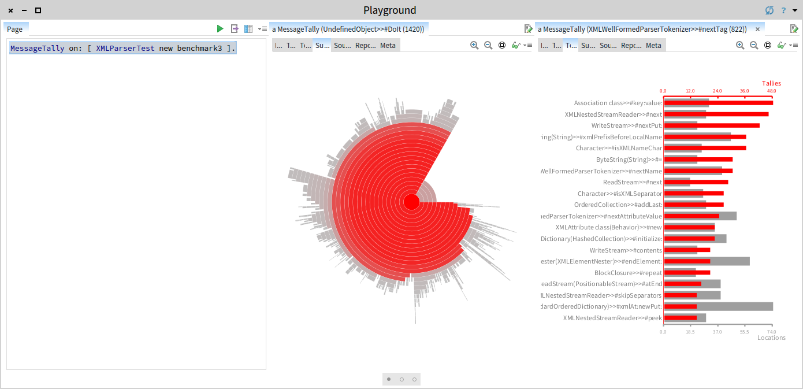
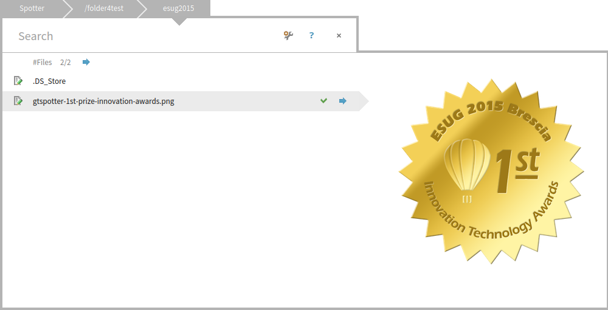
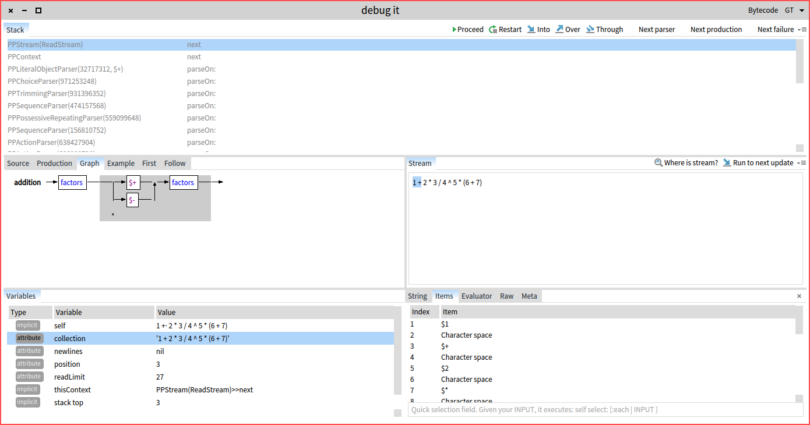
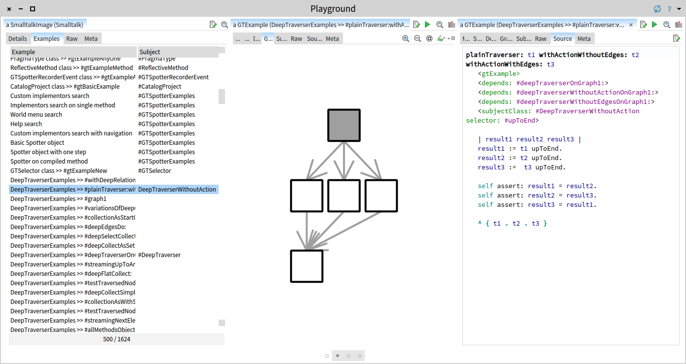

The Glamorous Toolkit is the moldable development environment. For Pharo. Because we believe that your system is too special to leave it in the hands of generic tools.
The GT Inspector lets you define custom presentations for each and every object. And then it enables you to navigate through them. Inexpensively.
The GT Playground powers up the workspace with an inspector and makes the code part of the flow.
Learn more:
Blog post: GTInspector deconstructed
Page: Moldable inspector
Blog post: Introducing GTPlayground
Blog post: Rethinking print-it in Pharo
Blog post: Rethinking compilation notifications in Pharo

The GT Spotter lets you search through objects. It is extensible like the inspector. Each object can define its own search processors.
Learn more:
Blog post: Introducing GTSpotter
Blog post: Boosting GTSpotter with preview
Blog post: Spotter demos
Blog post: Spotting senders and references with GTSpotter
Blog post: Discovering and managing GTSpotter extensions

The GT Debugger lets you build custom debuggers that can be switched to during debugging time.
Learn more:
Page: Moldable Debugger
Blog post: Debugging tests and parsers with GTDebugger (demo)

The GT Examples is a slim engine that lets you define examples throughout the code and use them for documentation or testing. Through Examples, a developer can switch rapidly from the static code to a live environment and program in the presence of objects.

The Core versions of Playground, Inspector, Spotter and Debugger are available out of the box in Pharo 5.0 and Pharo 6.0.
For a full experience, including Examples and visualizations powered by Roassal, download a premade image on top of Pharo 6.0.
Or install it by yourself in a Pharo 6.0 image:
Gofer new
smalltalkhubUser: 'Moose' project: 'GToolkit';
configuration;
loadDevelopment.